3GPP TS 38.322 V17.4.0 (2024-03)
Technical Specification
3rd Generation Partnership Project;
Technical Specification Group Radio Access Network;
NR;
Radio Link Control (RLC) protocol specification
(Release 17)
The present document has been developed within the 3rd Generation
Partnership Project (3GPP TM) and may be further elaborated
for the purposes of 3GPP.
The present document has not been subject to any approval process by the
3GPP Organizational Partners and shall not be implemented.
This Specification is provided for future development work within 3GPP
only. The Organizational Partners accept no liability for any use of
this Specification.
Specifications and Reports for implementation of the 3GPP TM
system should be obtained via the 3GPP Organizational Partners'
Publications Offices.
3GPP
Postal address
3GPP support office address
650 Route des Lucioles - Sophia Antipolis
Valbonne - FRANCE
Tel.: +33 4 92 94 42 00 Fax: +33 4 93 65 47 16
Internet
http://www.3gpp.org
Copyright Notification
No part may be reproduced except as authorized by written
permission.
The copyright and the foregoing restriction extend to reproduction in
all media.
© 2024, 3GPP Organizational Partners (ARIB, ATIS, CCSA, ETSI, TSDSI, TTA, TTC).
All rights reserved.
UMTS™ is a Trade Mark of ETSI registered for the benefit of its members
3GPP™ is a Trade Mark of ETSI registered for the benefit of its
Members and of the 3GPP Organizational Partners
LTE™ is a Trade Mark of ETSI registered for the benefit of its Members
and of the 3GPP Organizational Partners
GSM® and the GSM logo are registered and owned by the GSM Association
Foreword 5
1 Scope 6
2 References 6
3 Definitions, symbols and abbreviations 6
3.1 Definitions 6
3.2 Abbreviations 7
4 General 7
4.1 Introduction 7
4.2 RLC architecture 7
4.2.1 RLC entities 7
4.2.1.1 TM RLC entity 9
4.2.1.1.1 General 9
4.2.1.1.2 Transmitting TM RLC entity 9
4.2.1.1.3 Receiving TM RLC entity 9
4.2.1.2 UM RLC entity 9
4.2.1.2.1 General 9
4.2.1.2.2 Transmitting UM RLC entity 10
4.2.1.2.3 Receiving UM RLC entity 10
4.2.1.3 AM RLC entity 10
4.2.1.3.1 General 10
4.2.1.3.2 Transmitting side 11
4.2.1.3.3 Receiving side 12
4.3 Services 12
4.3.1 Services provided to upper layers 12
4.3.2 Services expected from lower layers 12
4.4 Functions 12
5 Procedures 13
5.1 RLC entity handling 13
5.1.1 RLC entity establishment 13
5.1.2 RLC entity re-establishment 13
5.1.3 RLC entity release 13
5.2 Data transfer procedures 13
5.2.1 TM data transfer 13
5.2.1.1 Transmit operations 13
5.2.1.1.1 General 13
5.2.1.2 Receive operations 14
5.2.1.2.1 General 14
5.2.2 UM data transfer 14
5.2.2.1 Transmit operations 14
5.2.2.1.1 General 14
5.2.2.2 Receive operations 14
5.2.2.2.1 General 14
5.2.2.2.2 Actions when an UMD PDU is received from lower layer 14
5.2.2.2.3 Actions when an UMD PDU is placed in the reception buffer 15
5.2.2.2.4 Actions when t-Reassembly expires 15
5.2.3 AM data transfer 16
5.2.3.1 Transmit operations 16
5.2.3.1.1 General 16
5.2.3.2 Receive operations 16
5.2.3.2.1 General 16
5.2.3.2.2 Actions when an AMD PDU is received from lower layer 17
5.2.3.2.3 Actions when an AMD PDU is placed in the reception buffer 17
5.2.3.2.4 Actions when t-Reassembly expires 18
5.3 ARQ procedures 18
5.3.1 General 18
5.3.2 Retransmission 18
5.3.3 Polling 19
5.3.3.1 General 19
5.3.3.2 Transmission of a AMD PDU 19
5.3.3.3 Reception of a STATUS report 20
5.3.3.4 Expiry of t-PollRetransmit 20
5.3.4 Status reporting 20
5.4 SDU discard procedures 21
5.5 Data volume calculation 21
5.6 Handling of unknown, unforeseen and erroneous protocol data 22
5.6.1 Reception of PDU with reserved or invalid values 22
6 Protocol data units, formats and parameters 22
6.1 Protocol data units 22
6.1.1 General 22
6.1.2 RLC data PDU 22
6.1.3 RLC control PDU 22
6.2 Formats and parameters 22
6.2.1 General 22
6.2.2 Formats 22
6.2.2.1 General 22
6.2.2.2 TMD PDU 23
6.2.2.3 UMD PDU 23
6.2.2.4 AMD PDU 24
6.2.2.5 STATUS PDU 25
6.2.3 Parameters 27
6.2.3.1 General 27
6.2.3.2 Data field 27
6.2.3.3 Sequence Number (SN) field 27
6.2.3.4 Segmentation Info (SI) field 27
6.2.3.5 Segment Offset (SO) field 27
6.2.3.6 Data/Control (D/C) field 28
6.2.3.7 Polling bit (P) field 28
6.2.3.8 Reserved (R) field 28
6.2.3.9 Control PDU Type (CPT) field 28
6.2.3.10 Acknowledgement SN (ACK_SN) field 28
6.2.3.11 Extension bit 1 (E1) field 29
6.2.3.12 Negative Acknowledgement SN (NACK_SN) field 29
6.2.3.13 Extension bit 2 (E2) field 29
6.2.3.14 SO start (SOstart) field 29
6.2.3.15 SO end (SOend) field 29
6.2.3.16 Extension bit 3 (E3) field 30
6.2.3.17 NACK range field 30
7 Variables, constants and timers 30
7.1 State variables 30
7.2 Constants 32
7.3 Timers 32
7.4 Configurable parameters 32
Annex A (informative): Change history 33
This Technical Specification has been produced by the 3rd Generation Partnership Project (3GPP).
The contents of the present document are subject to continuing work within the TSG and may change following formal TSG approval. Should the TSG modify the contents of the present document, it will be re-released by the TSG with an identifying change of release date and an increase in version number as follows:
Version x.y.z
where:
x the first digit:
1 presented to TSG for information;
2 presented to TSG for approval;
3 or greater indicates TSG approved document under change control.
y the second digit is incremented for all changes of substance, i.e. technical enhancements, corrections, updates, etc.
z the third digit is incremented when editorial only changes have been incorporated in the document.
The present document specifies the NR Radio Link Control (RLC) protocol for the UE – NR radio interface.
The following documents contain provisions which, through reference in this text, constitute provisions of the present document.
- References are either specific (identified by date of publication, edition number, version number, etc.) or non‑specific.
- For a specific reference, subsequent revisions do not apply.
- For a non-specific reference, the latest version applies. In the case of a reference to a 3GPP document (including a GSM document), a non-specific reference implicitly refers to the latest version of that document in the same Release as the present document.
[1] 3GPP TR 21.905: "Vocabulary for 3GPP Specifications".
[2] 3GPP TS 38.300: "NR Overall Description; Stage 2".
[3] 3GPP TS 38.321: "NR MAC protocol specification".
[4] 3GPP TS 38.323: "NR PDCP specification".
[5] 3GPP TS 38.331: "NR RRC Protocol specification".
[6] 3GPP TS 23.287: "Architecture enhancements for 5G System (5GS) to support Vehicle-to-Everything (V2X) services".
[7] 3GPP TS 38.340: "NR; Backhaul Adaptation Protocol (BAP) specification".
[8] 3GPP TS 23.304: "Proximity based Services (ProSe) in the 5G System (5GS)".
[9] 3GPP TS 38.351: "NR; Sidelink Relay Adaptation Protocol (SRAP) Specification".
For the purposes of the present document, the terms and definitions given in TR 21.905 [1] and the following apply. A term defined in the present document takes precedence over the definition of the same term, if any, in TR 21.905 [1].
Data field element: An RLC SDU or an RLC SDU segment that is mapped to the Data field.
NR sidelink communication: AS functionality enabling at least V2X Communication as defined in TS 23.287 [6] and ProSe communication (including ProSe non-Relay and UE-to-Network Relay communication) as defined in TS 23.304 [8], between two or more nearby UEs, using NR technology but not traversing any network node.
NR sidelink discovery: AS functionality enabling ProSe non-Relay Discovery and ProSe UE-to-Network Relay discovery for Proximity based Services as defined in TS 23.304 [8] between two or more nearby UEs, using NR technology but not traversing any network node.
RLC data volume: The amount of data available for transmission in an RLC entity.
RLC SDU segment: A segment of an RLC SDU.
For the purposes of the present document, the abbreviations given in TR 21.905 [1] and the following apply. An abbreviation defined in the present document takes precedence over the definition of the same abbreviation, if any, in TR 21.905 [1].
AM Acknowledged Mode
AMD AM Data
ARQ Automatic Repeat request
gNB NR Node B
MBS Multicast/Broadcast Services
MCCH MBS Control Channel
MTCH MBS Traffic Channel
PDU Protocol Data Unit
RLC Radio Link Control
SBCCH Sidelink Broadcast Control Channel
SCCH Sidelink Control Channel
SDU Service Data Unit
SN Sequence Number
STCH Sidelink Traffic Channel
TB Transport Block
TM Transparent Mode
TMD TM Data
UE User Equipment
UM Unacknowledged Mode
UMD UM Data
The objective is to describe the RLC architecture and the RLC entities from a functional point of view.
The description in this clause is a model and does not specify or restrict implementations.
RRC is generally in control of the RLC configuration.
Functions of the RLC sub layer are performed by RLC entities. For an RLC entity configured at the gNB, there is a peer RLC entity configured at the UE and vice versa. In NR sidelink communication, in NR sidelink discovery, for an RLC entity configured at the transmitting UE, there is a peer RLC entity configured at each receiving UE.
An RLC entity receives/delivers RLC SDUs from/to upper layer and sends/receives RLC PDUs to/from its peer RLC entity via lower layers.
An RLC PDU can either be an RLC data PDU or an RLC control PDU. If an RLC entity receives RLC SDUs from upper layer, it receives them through a single RLC channel between RLC and upper layer, and after forming RLC data PDUs from the received RLC SDUs, the RLC entity submits the RLC data PDUs to lower layer through a single logical channel. If an RLC entity receives RLC data PDUs from lower layer, it receives them through a single logical channel, and after forming RLC SDUs from the received RLC data PDUs, the RLC entity delivers the RLC SDUs to upper layer through a single RLC channel between RLC and upper layer. If an RLC entity submits/receives RLC control PDUs to/from lower layer, it submits/receives them through the same logical channel it submits/receives the RLC data PDUs through.
NOTE 1: In case the upper layer is BAP as defined in TS 38.340 [7], an RLC channel refers to a Backhaul RLC channel.
NOTE 2: In case the upper layer is SRAP as defined in TS 38.351 [9], an RLC channel refers to either a PC5 Relay RLC channel or a Uu Relay RLC channel.
An RLC entity can be configured to perform data transfer in one of the following three modes: Transparent Mode (TM), Unacknowledged Mode (UM) or Acknowledged Mode (AM). Consequently, an RLC entity is categorized as a TM RLC entity, an UM RLC entity or an AM RLC entity depending on the mode of data transfer that the RLC entity is configured to provide.
A TM RLC entity is configured either as a transmitting TM RLC entity or a receiving TM RLC entity. The transmitting TM RLC entity receives RLC SDUs from upper layer and sends RLC PDUs to its peer receiving TM RLC entity via lower layers. The receiving TM RLC entity delivers RLC SDUs to upper layer and receives RLC PDUs from its peer transmitting TM RLC entity via lower layers.
An UM RLC entity is configured either as a transmitting UM RLC entity or a receiving UM RLC entity. The transmitting UM RLC entity receives RLC SDUs from upper layer and sends RLC PDUs to its peer receiving UM RLC entity via lower layers. The receiving UM RLC entity delivers RLC SDUs to upper layer and receives RLC PDUs from its peer transmitting UM RLC entity via lower layers.
An AM RLC entity consists of a transmitting side and a receiving side. The transmitting side of an AM RLC entity receives RLC SDUs from upper layer and sends RLC PDUs to its peer AM RLC entity via lower layers. The receiving side of an AM RLC entity delivers RLC SDUs to upper layer and receives RLC PDUs from its peer AM RLC entity via lower layers.
Figure 4.2.1-1 illustrates the overview model of the RLC sub layer.
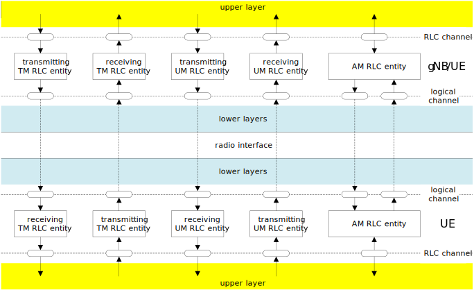
Figure 4.2.1-1: Overview model of the RLC sub layer
RLC SDUs of variable sizes which are byte aligned (i.e. multiple of 8 bits) are supported for all RLC entity types (i.e. TM, UM and AM RLC entity).
Each RLC SDU is used to construct an RLC PDU without waiting for notification from the lower layer (i.e., by MAC) of a transmission opportunity. In the case of UM and AM RLC entities, an RLC SDU may be segmented and transported using two or more RLC PDUs based on the notification(s) from the lower layer.
RLC PDUs are submitted to lower layer only when a transmission opportunity has been notified by lower layer (i.e. by MAC).
NOTE 3: The UE should aim to prevent excessive non-consecutive RLC PDUs in a MAC PDU when the UE is requested to generate more than one MAC PDU.
Description of different RLC entity types are provided below.
A TM RLC entity can be configured to submit/receive RLC PDUs through the following logical channels:
- BCCH, DL/UL CCCH, PCCH, and SBCCH.
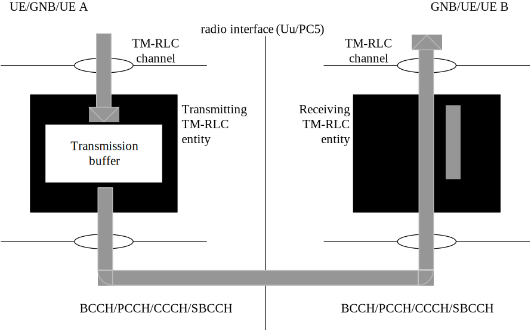
Figure 4.2.1.1.1-1: Model of two transparent mode peer entities
A TM RLC entity submits/receives the following RLC data PDU:
- TMD PDU.
When a transmitting TM RLC entity forms TMD PDUs from RLC SDUs, it shall:
- not segment the RLC SDUs;
- not include any RLC headers in the TMD PDUs.
When a receiving TM RLC entity receives TMD PDUs, it shall:
- deliver the TMD PDUs (which are just RLC SDUs) to upper layer.
An UM RLC entity can be configured to submit/receive RLC PDUs through the following logical channels:
- DL/UL DTCH, SCCH, STCH, MCCH, and MTCH.
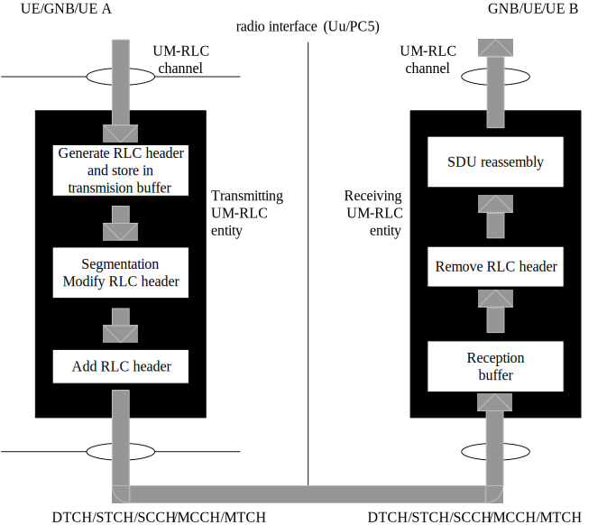
Figure 4.2.1.2.1-1: Model of two unacknowledged mode peer entities
An UM RLC entity submits/receives the following RLC data PDU:
- UMD PDU.
An UMD PDU contains either one complete RLC SDU or one RLC SDU segment.
NOTE: For groupcast and broadcast of NR sidelink communication or for NR sidelink discovery only uni-directional UM mode is supported.
The transmitting UM RLC entity generates UMD PDU(s) for each RLC SDU. It shall include relevant RLC headers in the UMD PDU. When notified of a transmission opportunity by the lower layer, the transmitting UM RLC entity shall segment the RLC SDUs, if needed, so that the corresponding UMD PDUs, with RLC headers updated as needed, fit within the total size of RLC PDU(s) indicated by lower layer.
When a receiving UM RLC entity receives UMD PDUs, it shall:
- detect the loss of RLC SDU segments at lower layers;
- reassemble RLC SDUs from the received UMD PDUs and deliver the RLC SDUs to upper layer as soon as they are available;
- discard received UMD PDUs that cannot be re-assembled into an RLC SDU due to loss at lower layers of an UMD PDU which belonged to the particular RLC SDU.
An AM RLC entity can be configured to submit/receive RLC PDUs through the following logical channels:
- DL/UL DCCH, DL/UL DTCH, SCCH, and STCH.
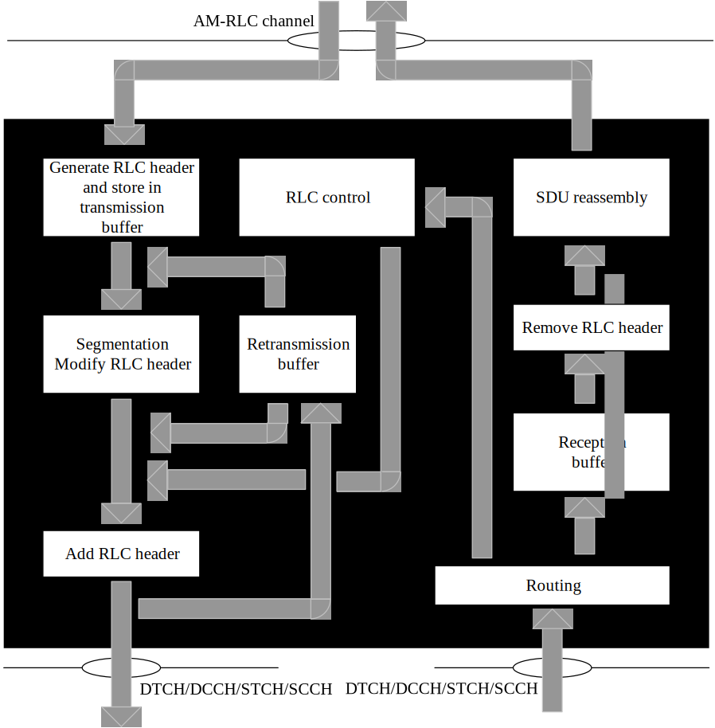
Figure 4.2.1.3.1-1: Model of an acknowledged mode entity
An AM RLC entity delivers/receives the following RLC data PDUs:
- AMD PDU.
An AMD PDU contains either one complete RLC SDU or one RLC SDU segment.
An AM RLC entity delivers/receives the following RLC control PDU:
- STATUS PDU.
The transmitting side of an AM RLC entity generates AMD PDU(s) for each RLC SDU. When notified of a transmission opportunity by the lower layer, the transmitting AM RLC entity shall segment the RLC SDUs, if needed, so that the corresponding AMD PDUs, with RLC headers updated as needed, fit within the total size of RLC PDU(s) indicated by lower layer.
The transmitting side of an AM RLC entity supports retransmission of RLC SDUs or RLC SDU segments (ARQ):
- if the RLC SDU or RLC SDU segment to be retransmitted (including the RLC header) does not fit within the total size of RLC PDU(s) indicated by lower layer at the particular transmission opportunity notified by lower layer, the AM RLC entity can segment the RLC SDU or re-segment the RLC SDU segments into RLC SDU segments;
- the number of re-segmentation is not limited.
When the transmitting side of an AM RLC entity forms AMD PDUs from RLC SDUs or RLC SDU segments, it shall:
- include relevant RLC headers in the AMD PDU.
When the receiving side of an AM RLC entity receives AMD PDUs, it shall:
- detect whether or not the AMD PDUs have been received in duplication, and discard duplicated AMD PDUs;
- detect the loss of AMD PDUs at lower layers and request retransmissions to its peer AM RLC entity;
- reassemble RLC SDUs from the received AMD PDUs and deliver the RLC SDUs to upper layer as soon as they are available.
The following services are provided by RLC to upper layer:
- TM data transfer;
- UM data transfer;
- AM data transfer, including indication of successful delivery of upper layers PDUs.
The following services are expected by RLC from lower layer (i.e. MAC):
- data transfer;
- notification of a transmission opportunity, together with the total size of the RLC PDU(s) to be transmitted in the transmission opportunity.
The following functions are supported by the RLC sub layer:
- transfer of upper layer PDUs;
- error correction through ARQ (only for AM data transfer);
- segmentation and reassembly of RLC SDUs (only for UM and AM data transfer);
- re-segmentation of RLC SDU segments (only for AM data transfer);
- duplicate detection (only for AM data transfer);
- RLC SDU discard (only for UM and AM data transfer);
- RLC re-establishment;
- Protocol error detection (only for AM data transfer).
When upper layers request an RLC entity establishment, the UE shall:
- establish a RLC entity;
- set the state variables of the RLC entity to initial values;
- follow the procedures in clause 5.2.
For NR sidelink groupcast and broadcast or SL-SRB4, when receiving the first UMD PDU from a Source Layer 2 ID and Destination Layer 2 ID pair for an LCID, and there is not yet a corresponding receiving RLC entity for a radio bearer, the UE shall:
- establish a receiving RLC entity;
- set the state variables of the RLC entity to initial values;
- follow the procedures in clause 5.2.
NOTE: The receiving RLC entity of SL-SRB0 and SL-SRB1 is established same as NR sidelink groupcast and broadcast.
When upper layers request an RLC entity re-establishment, the UE shall:
- discard all RLC SDUs, RLC SDU segments, and RLC PDUs, if any;
- stop and reset all timers;
- reset all state variables to their initial values.
When upper layers request an RLC entity release, the UE shall:
- discard all RLC SDUs, RLC SDU segments, and RLC PDUs, if any;
- release the RLC entity.
NOTE: For groupcast and broadcast of NR sidelink communication or for SL-SRB4, the receiving UM RLC entity release is up to UE implementation.
When submitting a new TMD PDU to lower layer, the transmitting TM RLC entity shall:
- submit an RLC SDU without any modification to lower layer.
When receiving a new TMD PDU from lower layer, the receiving TM RLC entity shall:
- deliver the TMD PDU without any modification to upper layer.
When submitting a UMD PDU to lower layer, the transmitting UM RLC entity shall:
- if the UMD PDU contains a segment of an RLC SDU, set the SN of the UMD PDU to TX_Next;
- if the UMD PDU contains a segment that maps to the last byte of an RLC SDU, then increment TX_Next by one.
The receiving UM RLC entity shall maintain a reassembly window according to state variable RX_Next_Highest as follows:
- a SN falls within the reassembly window if (RX_Next_Highest – UM_Window_Size) <= SN <RX_Next_Highest;
- a SN falls outside of the reassembly window otherwise.
When receiving an UMD PDU from lower layer, the receiving UM RLC entity shall:
- either deliver the UMD PDU to upper layer after removing the RLC header, discard the received UMD PDU, or place it in the reception buffer (see clause 5.2.2.2.2);
- if the received UMD PDU was placed in the reception buffer:
- update state variables, reassemble and deliver RLC SDUs to upper layer and start/stop t-Reassembly as needed (see clause 5.2.2.2.3).
When t-Reassembly expires, the receiving UM RLC entity shall:
- update state variables, discard RLC SDU segments and start t-Reassembly as needed (see clause 5.2.2.2.4).
When an UMD PDU is received from lower layer, the receiving UM RLC entity shall:
- if the UMD PDU header does not contain an SN:
- remove the RLC header and deliver the RLC SDU to upper layer.
- else if (RX_Next_Highest – UM_Window_Size) <= SN < RX_Next_Reassembly:
- discard the received UMD PDU.
- else:
- place the received UMD PDU in the reception buffer.
When an UMD PDU with SN = x is placed in the reception buffer, the receiving UM RLC entity shall:
- if all byte segments with SN = x are received:
- reassemble the RLC SDU from all byte segments with SN = x, remove RLC headers and deliver the reassembled RLC SDU to upper layer;
- if x = RX_Next_Reassembly:
- update RX_Next_Reassembly to the SN of the first SN > current RX_Next_Reassembly that has not been reassembled and delivered to upper layer.
- else if x falls outside of the reassembly window:
- update RX_Next_Highest to x + 1;
- discard any UMD PDUs with SN that falls outside of the reassembly window;
- if RX_Next_Reassembly falls outside of the reassembly window:
- set RX_Next_Reassembly to the SN of the first SN >= (RX_Next_Highest – UM_Window_Size) that has not been reassembled and delivered to upper layer.
- if t-Reassembly is running:
- if RX_Timer_Trigger <= RX_Next_Reassembly; or
- if RX_Timer_Trigger falls outside of the reassembly window and RX_Timer_Trigger is not equal to RX_Next_Highest; or
- if RX_Next_Highest = RX_Next_Reassembly + 1 and there is no missing byte segment of the RLC SDU associated with SN = RX_Next_Reassembly before the last byte of all received segments of this RLC SDU:
- stop and reset t-Reassembly.
- if t-Reassembly is not running (includes the case when t-Reassembly is stopped due to actions above):
- if RX_Next_Highest > RX_Next_Reassembly + 1; or
- if RX_Next_Highest = RX_Next_Reassembly + 1 and there is at least one missing byte segment of the RLC SDU associated with SN = RX_Next_Reassembly before the last byte of all received segments of this RLC SDU:
- start t-Reassembly;
- set RX_Timer_Trigger to RX_Next_Highest.
When t-Reassembly expires, the receiving UM RLC entity shall:
- update RX_Next_Reassembly to the SN of the first SN >= RX_Timer_Trigger that has not been reassembled;
- discard all segments with SN < updated RX_Next_Reassembly;
- if RX_Next_Highest > RX_Next_Reassembly + 1; or
- if RX_Next_Highest = RX_Next_Reassembly + 1 and there is at least one missing byte segment of the RLC SDU associated with SN = RX_Next_Reassembly before the last byte of all received segments of this RLC SDU:
- start t-Reassembly;
- set RX_Timer_Trigger to RX_Next_Highest.
The transmitting side of an AM RLC entity shall prioritize transmission of RLC control PDUs over AMD PDUs. The transmitting side of an AM RLC entity shall prioritize transmission of AMD PDUs containing previously transmitted RLC SDUs or RLC SDU segments over transmission of AMD PDUs containing not previously transmitted RLC SDUs or RLC SDU segments.
The transmitting side of an AM RLC entity shall maintain a transmitting window according to the state variable TX_Next_Ack as follows:
- a SN falls within the transmitting window if TX_Next_Ack <= SN < TX_Next_Ack + AM_Window_Size;
- a SN falls outside of the transmitting window otherwise.
The transmitting side of an AM RLC entity shall not submit to lower layer any AMD PDU whose SN falls outside of the transmitting window.
For each RLC SDU received from the upper layer, the AM RLC entity shall:
- associate a SN with the RLC SDU equal to TX_Next and construct an AMD PDU by setting the SN of the AMD PDU to TX_Next;
- increment TX_Next by one.
When submitting an AMD PDU that contains a segment of an RLC SDU, to lower layer, the transmitting side of an AM RLC entity shall:
- set the SN of the AMD PDU to the SN of the corresponding RLC SDU.
The transmitting side of an AM RLC entity can receive a positive acknowledgement (confirmation of successful reception by its peer AM RLC entity) for an RLC SDU by the following:
- STATUS PDU from its peer AM RLC entity.
When receiving a positive acknowledgement for an RLC SDU with SN = x, the transmitting side of an AM RLC entity shall:
- send an indication to the upper layers of successful delivery of the RLC SDU;
- set TX_Next_Ack equal to the SN of the RLC SDU with the smallest SN, whose SN falls within the range TX_Next_Ack <= SN <= TX_Next and for which a positive acknowledgment has not been received yet.
The receiving side of an AM RLC entity shall maintain a receiving window according to the state variable RX_Next as follows:
- a SN falls within the receiving window if RX_Next <= SN < RX_Next + AM_Window_Size;
- a SN falls outside of the receiving window otherwise.
When receiving an AMD PDU from lower layer, the receiving side of an AM RLC entity shall:
- either discard the received AMD PDU or place it in the reception buffer (see clause 5.2.3.2.2);
- if the received AMD PDU was placed in the reception buffer:
- update state variables, reassemble and deliver RLC SDUs to upper layer and start/stop t-Reassembly as needed (see clause 5.2.3.2.3).
When t-Reassembly expires, the receiving side of an AM RLC entity shall:
- update state variables and start t-Reassembly as needed (see clause 5.2.3.2.4).
When an AMD PDU is received from lower layer, where the AMD PDU contains byte segment numbers y to z of an RLC SDU with SN = x, the receiving side of an AM RLC entity shall:
- if x falls outside of the receiving window; or
- if byte segment numbers y to z of the RLC SDU with SN = x have been received before:
- discard the received AMD PDU.
- else:
- place the received AMD PDU in the reception buffer;
- if some byte segments of the RLC SDU contained in the AMD PDU have been received before:
- discard the duplicate byte segments.
When an AMD PDU with SN = x is placed in the reception buffer, the receiving side of an AM RLC entity shall:
- if x >= RX_Next_Highest:
- update RX_Next_Highest to x+ 1.
- if all bytes of the RLC SDU with SN = x are received:
- reassemble the RLC SDU from AMD PDU(s) with SN = x, remove RLC headers when doing so and deliver the reassembled RLC SDU to upper layer;
- if x = RX_Highest_Status:
- update RX_Highest_Status to the SN of the first RLC SDU with SN > current RX_Highest_Status for which not all bytes have been received.
- if x = RX_Next:
- update RX_Next to the SN of the first RLC SDU with SN > current RX_Next for which not all bytes have been received.
- if t-Reassembly is running:
- if RX_Next_Status_Trigger = RX_Next; or
- if RX_Next_Status_Trigger = RX_Next + 1 and there is no missing byte segment of the SDU associated with SN = RX_Next before the last byte of all received segments of this SDU; or
- if RX_Next_Status_Trigger falls outside of the receiving window and RX_Next_Status_Trigger is not equal to RX_Next + AM_Window_Size:
- stop and reset t-Reassembly.
- if t-Reassembly is not running (includes the case t-Reassembly is stopped due to actions above):
- if RX_Next_Highest> RX_Next +1; or
- if RX_Next_Highest = RX_Next + 1 and there is at least one missing byte segment of the SDU associated with SN = RX_Next before the last byte of all received segments of this SDU:
- start t-Reassembly;
- set RX_Next_Status_Trigger to RX_Next_Highest.
When t-Reassembly expires, the receiving side of an AM RLC entity shall:
- update RX_Highest_Status to the SN of the first RLC SDU with SN >= RX_Next_Status_Trigger for which not all bytes have been received;
- if RX_Next_Highest> RX_Highest_Status +1: or
- if RX_Next_Highest = RX_Highest_Status + 1 and there is at least one missing byte segment of the SDU associated with SN = RX_Highest_Status before the last byte of all received segments of this SDU:
- start t-Reassembly;
- set RX_Next_Status_Trigger to RX_Next_Highest.
ARQ procedures are only performed by an AM RLC entity.
The transmitting side of an AM RLC entity can receive a negative acknowledgement (notification of reception failure by its peer AM RLC entity) for an RLC SDU or an RLC SDU segment by the following:
- STATUS PDU from its peer AM RLC entity.
When receiving a negative acknowledgement for an RLC SDU or an RLC SDU segment by a STATUS PDU from its peer AM RLC entity, the transmitting side of the AM RLC entity shall:
- if the SN of the corresponding RLC SDU falls within the range TX_Next_Ack <= SN < = the highest SN of the AMD PDU among the AMD PDUs submitted to lower layer:
- consider the RLC SDU or the RLC SDU segment for which a negative acknowledgement was received for retransmission.
When an RLC SDU or an RLC SDU segment is considered for retransmission, the transmitting side of the AM RLC entity shall:
- if the RLC SDU or RLC SDU segment is considered for retransmission for the first time:
- set the RETX_COUNT associated with the RLC SDU to zero.
- else, if it (the RLC SDU or the RLC SDU segment that is considered for retransmission) is not pending for retransmission already and the RETX_COUNT associated with the RLC SDU has not been incremented due to another negative acknowledgment in the same STATUS PDU:
- increment the RETX_COUNT.
- if RETX_COUNT = maxRetxThreshold:
- indicate to upper layers that max retransmission has been reached.
When retransmitting an RLC SDU or an RLC SDU segment, the transmitting side of an AM RLC entity shall:
- if needed, segment the RLC SDU or the RLC SDU segment;
- form a new AMD PDU which will fit within the total size of AMD PDU(s) indicated by lower layer at the particular transmission opportunity;
- submit the new AMD PDU to lower layer.
When forming a new AMD PDU, the transmitting side of an AM RLC entity shall:
- only map the original RLC SDU or RLC SDU segment to the Data field of the new AMD PDU;
- modify the header of the new AMD PDU in accordance with the description in clause 6.2.2.4;
- set the P field according to clause 5.3.3.
An AM RLC entity can poll its peer AM RLC entity in order to trigger STATUS reporting at the peer AM RLC entity.
Upon notification of a transmission opportunity by lower layer, for each AMD PDU submitted for transmission such that the AMD PDU contains either a not previously transmitted RLC SDU or an RLC SDU segment containing not previously transmitted byte segment, the transmitting side of an AM RLC entity shall:
- increment PDU_WITHOUT_POLL by one;
- increment BYTE_WITHOUT_POLL by every new byte of Data field element that it maps to the Data field of the AMD PDU;
- if PDU_WITHOUT_POLL >= pollPDU; or
- if BYTE_WITHOUT_POLL >= pollByte:
- include a poll in the AMD PDU as described below.
Upon notification of a transmission opportunity by lower layer, for each AMD PDU submitted for transmission, the transmitting side of an AM RLC entity shall:
- if both the transmission buffer and the retransmission buffer becomes empty (excluding transmitted RLC SDUs or RLC SDU segments awaiting acknowledgements) after the transmission of the AMD PDU; or
- if no new RLC SDU can be transmitted after the transmission of the AMD PDU (e.g. due to window stalling);
- include a poll in the AMD PDU as described below.
NOTE: Empty RLC buffer (excluding transmitted RLC SDUs or RLC SDU segments awaiting acknowledgements) should not lead to unnecessary polling when data awaits in the upper layer. Details are left up to UE implementation.
To include a poll in an AMD PDU, the transmitting side of an AM RLC entity shall:
- set the P field of the AMD PDU to "1";
- set PDU_WITHOUT_POLL to 0;
- set BYTE_WITHOUT_POLL to 0.
Upon submission of an AMD PDU including a poll to lower layer, the transmitting side of an AM RLC entity shall:
- set POLL_SN to the highest SN of the AMD PDU among the AMD PDUs submitted to lower layer;
- if t-PollRetransmit is not running:
- start t-PollRetransmit.
- else:
- restart t-PollRetransmit.
Upon reception of a STATUS report from the receiving RLC AM entity the transmitting side of an AM RLC entity shall:
- if the STATUS report comprises a positive or negative acknowledgement for the RLC SDU with sequence number equal to POLL_SN:
- if t-PollRetransmit is running:
- stop and reset t-PollRetransmit.
Upon expiry of t-PollRetransmit, the transmitting side of an AM RLC entity shall:
- if both the transmission buffer and the retransmission buffer are empty (excluding transmitted RLC SDU or RLC SDU segment awaiting acknowledgements); or
- if no new RLC SDU or RLC SDU segment can be transmitted (e.g. due to window stalling):
- consider the RLC SDU with the highest SN among the RLC SDUs submitted to lower layer for retransmission; or
- consider any RLC SDU which has not been positively acknowledged for retransmission.
- include a poll in an AMD PDU as described in clause 5.3.3.2.
An AM RLC entity sends STATUS PDUs to its peer AM RLC entity in order to provide positive and/or negative acknowledgements of RLC SDUs (or portions of them).
Triggers to initiate STATUS reporting include:
- Polling from its peer AM RLC entity:
- When an AMD PDU with SN = x and the P field set to "1" is received from lower layer, the receiving side of an AM RLC entity shall:
- if the AMD PDU is to be discarded as specified in clause 5.2.3.2.2; or
- if x < RX_Highest_Status or x >= RX_Next + AM_Window_Size:
- trigger a STATUS report.
- else:
- delay triggering the STATUS report until x < RX_Highest_Status or x >= RX_Next + AM_Window_Size.
NOTE 1: This ensures that the RLC Status report is transmitted after HARQ reordering.
- Detection of reception failure of an AMD PDU
- The receiving side of an AM RLC entity shall trigger a STATUS report when t-Reassembly expires.
NOTE 2: The expiry of t-Reassembly triggers both RX_Highest_Status to be updated and a STATUS report to be triggered, but the STATUS report shall be triggered after RX_Highest_Status is updated.
When STATUS reporting has been triggered, the receiving side of an AM RLC entity shall:
- if t-StatusProhibit is not running:
- at the first transmission opportunity indicated by lower layer, construct a STATUS PDU and submit it to lower layer.
- else:
- at the first transmission opportunity indicated by lower layer after t-StatusProhibit expires, construct a single STATUS PDU even if status reporting was triggered several times while t-StatusProhibit was running and submit it to lower layer.
When a STATUS PDU has been submitted to lower layer, the receiving side of an AM RLC entity shall:
- start t-StatusProhibit.
When constructing a STATUS PDU, the AM RLC entity shall:
- for the RLC SDUs with SN such that RX_Next <= SN < RX_Highest_Status that has not been completely received yet, in increasing SN order of RLC SDUs and increasing byte segment order within RLC SDUs, starting with SN = RX_Next up to the point where the resulting STATUS PDU still fits to the total size of RLC PDU(s) indicated by lower layer:
- for an RLC SDU for which no byte segments have been received yet:
- include in the STATUS PDU a NACK_SN which is set to the SN of the RLC SDU.
- for a continuous sequence of byte segments of a partly received RLC SDU that have not been received yet:
- include in the STATUS PDU a set of NACK_SN, SOstart and SOend.
- for a continuous sequence of RLC SDUs that have not been received yet:
- include in the STATUS PDU a set of NACK_SN and NACK range;
- include in the STATUS PDU, if required, a pair of SOstart and SOend.
- set the ACK_SN to the SN of the next not received RLC SDU which is not indicated as missing in the resulting STATUS PDU.
When indicated from upper layer (e.g. PDCP) to discard a particular RLC SDU, the transmitting side of an AM RLC entity or the transmitting UM RLC entity shall discard the indicated RLC SDU, if neither the RLC SDU nor a segment thereof has been submitted to the lower layers. The transmitting side of an AM RLC entity shall not introduce an RLC SN gap when discarding an RLC SDU.
For the purpose of MAC buffer status reporting, the UE shall consider the following as RLC data volume:
- RLC SDUs and RLC SDU segments that have not yet been included in an RLC data PDU;
- RLC data PDUs that are pending for initial transmission;
- RLC data PDUs that are pending for retransmission (RLC AM).
In addition, if a STATUS PDU has been triggered and t-StatusProhibit is not running or has expired, the UE shall estimate the size of the STATUS PDU that will be transmitted in the next transmission opportunity, and consider this as part of RLC data volume.
When an RLC entity receives an RLC PDU that contains reserved or invalid values, the RLC entity shall:
- discard the received RLC PDU.
RLC PDUs can be categorized into RLC data PDUs and RLC control PDUs. RLC data PDUs in clause 6.1.2 are used by TM, UM and AM RLC entities to transfer upper layer PDUs (i.e. RLC SDUs). RLC control PDUs in clause 6.1.3 are used by AM RLC entity to perform ARQ procedures.
a) TMD PDU
TMD PDU is used to transfer upper layer PDUs by a TM RLC entity.
b) UMD PDU
UMD PDU is used to transfer upper layer PDUs by an UM RLC entity.
c) AMD PDU
AMD PDU is used to transfer upper layer PDUs by an AM RLC entity.
a) STATUS PDU
STATUS PDU is used by the receiving side of an AM RLC entity to inform the peer AM RLC entity about RLC data PDUs that are received successfully, and RLC data PDUs that are detected to be lost by the receiving side of an AM RLC entity.
The formats of RLC PDUs are described in clause 6.2.2 and their parameters are described in clause 6.2.3.
RLC PDU is a bit string. In the figures in clause 6.2.2.2 to 6.2.2.5, bit strings are represented by tables in which the first and most significant bit is the left most bit of the first line of the table, the last and least significant bit is the rightmost bit of the last line of the table, and more generally the bit string is to be read from left to right and then in the reading order of the lines.
RLC SDUs are bit strings that are byte aligned (i.e. multiple of 8 bits) in length. An RLC SDU is included into an RLC PDU from first bit onward.
TMD PDU consists only of a Data field and does not consist of any RLC headers.
Figure 6.2.2.2-1: TMD PDU
UMD PDU consists of a Data field and an UMD PDU header. The UMD PDU header is byte aligned.
When an UMD PDU contains a complete RLC SDU, the UMD PDU header only contains the SI and R fields.
An UM RLC entity is configured by RRC to use either a 6 bit SN or a 12 bit SN. For groupcast and broadcast of NR sidelink communication or for SL-SRB4, only 6 bit SN length is configured. An UMD PDU header contains the SN field only when the corresponding RLC SDU is segmented. An UMD PDU carrying the first segment of an RLC SDU does not carry the SO field in its header. The length of the SO field is 16 bits.
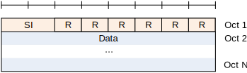
Figure 6.2.2.3-1: UMD PDU containing a complete RLC SDU
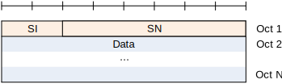
Figure 6.2.2.3-2: UMD PDU with 6 bit SN (No SO)
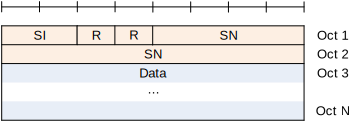
Figure 6.2.2.3-3: UMD PDU with 12 bit SN (No SO)
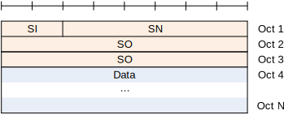
Figure 6.2.2.3-4: UMD PDU with 6 bit SN and with SO
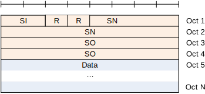
Figure 6.2.2.3-5: UMD PDU with 12 bit SN and with SO
AMD PDU consists of a Data field and an AMD PDU header. The AMD PDU header is byte aligned.
An AM RLC entity is configured by RRC to use either a 12 bit SN or a 18 bit SN. The length of the AMD PDU header is two and three bytes respectively.
An AMD PDU header contains a D/C, a P, a SI, and a SN. An AMD PDU header contains the SO field only when the Data field consists of an RLC SDU segment which is not the first segment, in which case a 16 bit SO is present.
Figure 6.2.2.4-1: AMD PDU with 12 bit SN (No SO)
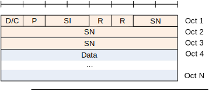
Figure 6.2.2.4-2: AMD PDU with 18 bit SN (No SO)
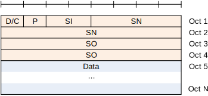
Figure 6.2.2.4-3: AMD PDU with 12 bit SN with SO
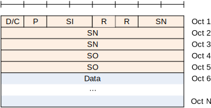
Figure 6.2.2.4-4: AMD PDU with 18 bit SN with SO
STATUS PDU consists of a STATUS PDU payload and an RLC control PDU header.
RLC control PDU header consists of a D/C and a CPT field.
The STATUS PDU payload starts from the first bit following the RLC control PDU header, and it consists of one ACK_SN and one E1, zero or more sets of a NACK_SN, an E1, an E2 and an E3, and possibly a pair of a SOstart and a SOend or a NACK range field for each NACK_SN.
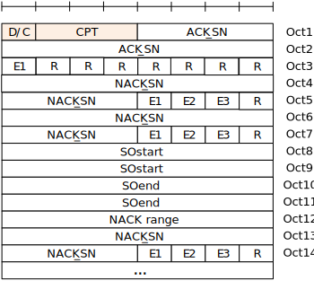
Figure 6.2.2.5-1: STATUS PDU with 12 bit SN
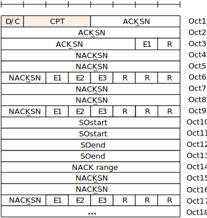
Figure 6.2.2.5-2: STATUS PDU with 18 bit SN
In the definition of each field in clauses 6.2.3.2 to 6.2.3.5, the bits in the parameters are represented in which the first and most significant bit is the left most bit and the last and least significant bit is the rightmost bit. Unless mentioned otherwise, integers are encoded in standard binary encoding for unsigned integers.
Data field elements are mapped to the Data field in the order which they arrive to the RLC entity at the transmitter.
For TMD PDU, UMD PDU and AMD PDU:
- The granularity of the Data field size is one byte;
- The maximum Data field size is the maximum size of a PDCP PDU.
NOTE: In case the upper layer is BAP as specified in TS 38.340 [7] or SRAP as specified in TS 38.351 [9], the maximum Data field size can be larger than the maximum size of a PDCP PDU.
For TMD PDU:
- Only one RLC SDU can be mapped to the Data field of one TMD PDU.
For UMD PDU, and AMD PDU:
- Either of the following can be mapped to the Data field of one UMD PDU, or AMD PDU:
- One RLC SDU;
- One RLC SDU segment.
Length: 12 bits or 18 bits (configurable) for AMD PDU. 6 bits or 12 bits (configurable) for UMD PDU.
The SN field indicates the sequence number of the corresponding RLC SDU. For RLC AM, the sequence number is incremented by one for every RLC SDU. For RLC UM, the sequence number is incremented by one for every segmented RLC SDU.
Length: 2 bits.
The SI field indicates whether an RLC PDU contains a complete RLC SDU or the first, middle, last segment of an RLC SDU.
Table 6.2.3.4-1: SI field interpretation
|
|
|---|---|
| 00 | Data field contains all bytes of an RLC SDU |
| 01 | Data field contains the first segment of an RLC SDU |
| 10 | Data field contains the last segment of an RLC SDU |
| 11 | Data field contains neither the first nor last segment of an RLC SDU |
Length: 16 bits
The SO field indicates the position of the RLC SDU segment in bytes within the original RLC SDU. Specifically, the SO field indicates the position within the original RLC SDU to which the first byte of the RLC SDU segment in the Data field corresponds. The first byte of the original RLC SDU is referred by the SO field value "0000000000000000", i.e., numbering starts at zero.
Length: 1 bit.
The D/C field indicates whether the RLC PDU is an RLC data PDU or RLC control PDU. The interpretation of the D/C field is provided in Table 6.2.3.6-1.
Table 6.2.3.6-1: D/C field interpretation
| Value | Description |
|---|---|
| 0 | Control PDU |
| 1 | Data PDU |
Length: 1 bit.
The P field indicates whether or not the transmitting side of an AM RLC entity requests a STATUS report from its peer AM RLC entity. The interpretation of the P field is provided in Table 6.2.3.7-1.
Table 6.2.3.7-1: P field interpretation
| Value | Description |
|---|---|
| 0 | Status report not requested |
| 1 | Status report is requested |
Length: 1 bit.
The R field is a reserved field for this release of the protocol. The transmitting entity shall set the R field to "0". The receiving entity shall ignore this field.
Length: 3 bits.
The CPT field indicates the type of the RLC control PDU. The interpretation of the CPT field is provided in Table 6.2.3.9-1.
Table 6.2.3.9-1: CPT field interpretation
| Value | Description |
|---|---|
|
|
|
|
Length: 12 bits or 18 bits (configurable).
The ACK_SN field indicates the SN of the next not received RLC SDU which is not reported as missing in the STATUS PDU. When the transmitting side of an AM RLC entity receives a STATUS PDU, it interprets that all RLC SDUs up to but not including the RLC SDU with SN = ACK_SN have been received by its peer AM RLC entity, excluding those RLC SDUs indicated in the STATUS PDU with NACK_SN, portions of RLC SDUs indicated in the STATUS PDU with NACK_SN, SOstart and SOend, RLC SDUs indicated in the STATUS PDU with NACK_SN and NACK_range, and portions of RLC SDUs indicated in the STATUS PDU with NACK_SN, NACK range, SOstart and SOend.
Length: 1 bit.
The E1 field indicates whether or not a set of NACK_SN, E1, E2 and E3 follows. The interpretation of the E1 field is provided in Table 6.2.3.11-1.
Table 6.2.3.11-1: E1 field interpretation
| Value | Description |
|---|---|
| 0 | A set of NACK_SN, E1, E2 and E3 does not follow. |
| 1 | A set of NACK_SN, E1, E2 and E3 follows. |
Length: 12 bits or 18 bits (configurable).
The NACK_SN field indicates the SN of the RLC SDU (or RLC SDU segment) that has been detected as lost at the receiving side of the AM RLC entity.
Length: 1 bit.
The E2 field indicates whether or not a set of SOstart and SOend follows. The interpretation of the E2 field is provided in Table 6.2.3.13-1.
Table 6.2.3.13-1: E2 field interpretation
| Value | Description |
|---|---|
| 0 | A set of SOstart and SOend does not follow for this NACK_SN. |
| 1 | A set of SOstart and SOend follows for this NACK_SN. |
Length: 16 bits.
The SOstart field (together with the SOend field) indicates the portion of the RLC SDU with SN = NACK_SN (the NACK_SN for which the SOstart is related to) that has been detected as lost at the receiving side of the AM RLC entity. Specifically, the SOstart field indicates the position of the first byte of the portion of the RLC SDU in bytes within the original RLC SDU. The first byte of the original RLC SDU is referred by the SOstart field value "0000000000000000", i.e., numbering starts at zero.
Length: 16 bits.
When E3 is 0, the SOend field (together with the SOstart field) indicates the portion of the RLC SDU with SN = NACK_SN (the NACK_SN for which the SOend is related to) that has been detected as lost at the receiving side of the AM RLC entity. Specifically, the SOend field indicates the position of the last byte of the portion of the RLC SDU in bytes within the original RLC SDU. The first byte of the original RLC SDU is referred by the SOend field value "0000000000000000", i.e., numbering starts at zero. The special SOend value "1111111111111111" is used to indicate that the missing portion of the RLC SDU includes all bytes to the last byte of the RLC SDU.
When E3 is 1, the SOend field indicates the portion of the RLC SDU with SN = NACK_SN + NACK range - 1 that has been detected as lost at the receiving side of the AM RLC entity. Specifically, the SOend field indicates the position of the last byte of the portion of the RLC SDU in bytes within the original RLC SDU. The first byte of the original RLC SDU is referred by the SOend field value "0000000000000000", i.e., numbering starts at zero. The special SOend value "1111111111111111" is used to indicate that the missing portion of the RLC SDU includes all bytes to the last byte of the RLC SDU.
Length: 1 bit.
The E3 field indicates whether or not information about a continous sequence of RLC SDUs that have not been received follows.
Table 6.2.3.16-1: E3 field interpretation
| Value | Description |
|---|---|
| 0 | NACK range field does not follow for this NACK_SN. |
| 1 | NACK range field follows for this NACK_SN. |
Length: 8 bits
This NACK range field is the number of consecutively lost RLC SDUs starting from and including NACK_SN.
This clause describes the state variables used in AM and UM entities in order to specify the RLC protocol. The state variables defined in this clause are normative.
All state variables and all counters are non-negative integers.
All state variables related to AM data transfer can take values from 0 to 4095 for 12 bit SN or from 0 to 262143 for 18 bit SN. All arithmetic operations contained in the present document on state variables related to AM data transfer are affected by the AM modulus (i.e. final value = [value from arithmetic operation] modulo 4096 for 12 bit SN and 262144 for 18 bit SN).
All state variables related to UM data transfer can take values from 0 to 63 for 6 bit SN or from 0 to 4095 for 12 bit SN. All arithmetic operations contained in the present document on state variables related to UM data transfer are affected by the UM modulus (i.e. final value = [value from arithmetic operation] modulo 64 for 6 bit SN and 4096 for 12 bit SN).
When performing arithmetic comparisons of state variables or SN values, a modulus base shall be used.
TX_Next_Ack and RX_Next shall be assumed as the modulus base at the transmitting side and receiving side of an AM RLC entity, respectively. This modulus base is subtracted from all the values involved, and then an absolute comparison is performed (e.g. RX_Next <= SN < RX_Next + AM_Window_Size is evaluated as [RX_Next – RX_Next] modulo 2[sn-FieldLength] <= [SN – RX_Next] modulo 2[sn-FieldLength] < [RX_Next + AM_Window_Size – RX_Next] modulo 2[sn-FieldLength]), where sn-FieldLength is 12 or 18 for 12 bit SN and 18 bit SN, respectively.
RX_Next_Highest– UM_Window_Size shall be assumed as the modulus base at the receiving UM RLC entity. This modulus base is subtracted from all the values involved, and then an absolute comparison is performed (e.g. (RX_Next_Highest– UM_Window_Size) <= SN < RX_Next_Highest is evaluated as [(RX_Next_Highest– UM_Window_Size) – (RX_Next_Highest– UM_Window_Size)] modulo 2[sn-FieldLength] <= [SN – (RX_Next_Highest– UM_Window_Size)] modulo 2[sn-FieldLength] < [RX_Next_Highest– (RX_Next_Highest– UM_Window_Size)] modulo 2[sn-FieldLength]), where sn-FieldLength is 6 or 12 for 6 bit SN and 12 bit SN, respectively.
The transmitting side of each AM RLC entity shall maintain the following state variables:
a) TX_Next_Ack – Acknowledgement state variable
This state variable holds the value of the SN of the next RLC SDU for which a positive acknowledgment is to be received in-sequence, and it serves as the lower edge of the transmitting window. It is initially set to 0, and is updated whenever the AM RLC entity receives a positive acknowledgment for an RLC SDU with SN = TX_Next_Ack.
b) TX_Next – Send state variable
This state variable holds the value of the SN to be assigned for the next newly generated AMD PDU. It is initially set to 0, and is updated whenever the AM RLC entity constructs an AMD PDU with SN = TX_Next and contains an RLC SDU or the last segment of a RLC SDU.
c) POLL_SN – Poll send state variable
This state variable holds the value of the highest SN of the AMD PDU among the AMD PDUs submitted to lower layer when POLL_SN is set according to clause 5.3.3.2. It is initially set to 0.
The transmitting side of each AM RLC entity shall maintain the following counters:
a) PDU_WITHOUT_POLL – Counter
This counter is initially set to 0. It counts the number of AMD PDUs sent since the most recent poll bit was transmitted.
b) BYTE_WITHOUT_POLL – Counter
This counter is initially set to 0. It counts the number of data bytes sent since the most recent poll bit was transmitted.
c) RETX_COUNT – Counter
This counter counts the number of retransmissions of an RLC SDU or RLC SDU segment (see clause 5.3.2). There is one RETX_COUNT counter maintained per RLC SDU.
The receiving side of each AM RLC entity shall maintain the following state variables:
a) RX_Next – Receive state variable
This state variable holds the value of the SN following the last in-sequence completely received RLC SDU, and it serves as the lower edge of the receiving window. It is initially set to 0, and is updated whenever the AM RLC entity receives an RLC SDU with SN = RX_Next.
b) RX_Next_Status_Trigger – t-Reassembly state variable
This state variable holds the value of the SN following the SN of the RLC SDU which triggered t-Reassembly.
c) RX_Highest_Status – Maximum STATUS transmit state variable
This state variable holds the highest possible value of the SN which can be indicated by "ACK_SN" when a STATUS PDU needs to be constructed. It is initially set to 0.
d) RX_Next_Highest – Highest received state variable
This state variable holds the value of the SN following the SN of the RLC SDU with the highest SN among received RLC SDUs. It is initially set to 0.
Each transmitting UM RLC entity shall maintain the following state variables:
a) TX_Next – UM send state variable
This state variable holds the value of the SN to be assigned for the next newly generated UMD PDU with segment. It is initially set to 0, and is updated after the UM RLC entity submits a UMD PDU including the last segment of an RLC SDU to lower layers.
Each receiving UM RLC entity shall maintain the following state variables:
a) RX_Next_Reassembly – UM receive state variable
This state variable holds the value of the earliest SN that is still considered for reassembly. It is initially set to 0. For groupcast and broadcast of NR sidelink communication or for SL-SRB4 of NR sidelink discovery, it is initially set to the SN of the first received UMD PDU containing an SN. For the receiving UM RLC entity configured for MCCH or MTCH, it is up to UE implementation to set the initial value of RX_Next_Reassembly to a value before RX_Next_Highest.
b) RX_Timer_Trigger – UM t-Reassembly state variable
This state variable holds the value of the SN following the SN which triggered t-Reassembly.
c) RX_Next_Highest– UM receive state variable
This state variable holds the value of the SN following the SN of the UMD PDU with the highest SN among received UMD PDUs. It serves as the higher edge of the reassembly window. It is initially set to 0. For groupcast and broadcast of NR sidelink communication or for SL-SRB4 of NR sidelink discovery, it is initially set to the SN of the first received UMD PDU containing an SN. For the receiving UM RLC entity configured for MCCH or MTCH, it is initially set to the SN of the first received UMD PDU containing an SN.
a) AM_Window_Size
This constant is used by both the transmitting side and the receiving side of each AM RLC entity. AM_Window_Size = 2048 when a 12 bit SN is used, AM_Window_Size = 131072 when an 18 bit SN is used.
b) UM_Window_Size
This constant is used by the receiving UM RLC entity to define SNs of those UMD SDUs that can be received without causing an advancement of the receiving window. UM_Window_Size = 32 when a 6 bit SN is configured, UM_Window_Size = 2048 when a 12 bit SN is configured.
The following timers are configured by TS 38.331 [5]:
a) t-PollRetransmit
This timer is used by the transmitting side of an AM RLC entity in order to retransmit a poll (see clause 5.3.3).
b) t-Reassembly
This timer is used by the receiving side of an AM RLC entity and receiving UM RLC entity in order to detect loss of RLC PDUs at lower layer (see clauses 5.2.2.2 and 5.2.3.2). If t-Reassembly is running, t-Reassembly shall not be started additionally, i.e. only one t-Reassembly per RLC entity is running at a given time.
c) t-StatusProhibit
This timer is used by the receiving side of an AM RLC entity in order to prohibit transmission of a STATUS PDU (see clause 5.3.4).
The following parameters are configured by TS 38.331 [5]:
a) maxRetxThreshold
This parameter is used by the transmitting side of each AM RLC entity to limit the number of retransmissions corresponding to an RLC SDU, including its segments (see clause 5.3.2).
b) pollPDU
This parameter is used by the transmitting side of each AM RLC entity to trigger a poll for every pollPDU PDUs (see clause 5.3.3).
c) pollByte
This parameter is used by the transmitting side of each AM RLC entity to trigger a poll for every pollByte bytes (see clause 5.3.3).
Annex A
(informative):
Change history
| Change history | |||||||
| Date | Meeting | TDoc | CR | Rev | Cat | Subject/Comment | New version |
| 2017-04 | RAN2#97bis | R2-1703648 | Skeleton of NR RLC specification | x.y.z | |||
| 2017-05 | RAN2#98 | R2-1705513 | Initial draft TS capturing outcome of email discussion [97bis#25] | 0.0.2 | |||
| 2017-06 | RAN#98 | R2-1707257 | Draft TS capturing outcome of email discussion [98#36] | 0.1.0 | |||
| 2017-07 | RAN2 NR AH#2 | R2-1707508 | Draft TS capturing outcome of email discussion [NR-AH2#06] | 0.2.0 | |||
| 2017-08 | RAN2#99 | R2-1709752 | Draft TS capturing outcome of email discussion [99#11] | 0.3.0 | |||
| 2017-09 | RAN#77 | RP-171883 | Submitted to RAN for information | 1.0.0 | |||
| 2017-10 | RAN2#99bis | R2-1712478 | Draft TS capturing outcome of email discussion [99bis#13] | 1.1.0 | |||
| 2017-12 | RAN2#100 | R2-1714261 | Draft TS capturing outcome of email discussion [100#21] | 1.2.0 | |||
| 2017-12 | RP-78 | RP-172322 | Submitted to RAN for approval | 2.0.0 | |||
| 2017-12 | RP-78 | Upgraded to Rel-15 | 15.0.0 | ||||
| 2018-03 | RP-79 | RP-180440 | 0003 | - | F | Corrections for RLC specification | 15.1.0 |
| 2018-06 | RP-80 | RP-181214 | 0009 | 1 | F | CR on updating POLL_SN value and selecting the RLC SDU for retransmission | 15.2.0 |
| 2018-09 | RP-81 | RP-181939 | 0018 | 1 | F | Remaining corrections on TS 38.322 | 15.3.0 |
| 2018-12 | RP-82 | RP-182658 | 0028 | 1 | F | Ambiguity of POLL_SN update timing | 15.4.0 |
| 2019-03 | RP-83 | RP-190540 | 0029 | 1 | D | Corrections on RLC state variables | 15.5.0 |
| 2020-03 | RP-87 | RP-200346 | 0030 | 1 | B | CR for 38.322 for NR V2X | 16.0.0 |
| 2020-07 | RP-88 | RP-201179 | 0036 | 1 | F | Correction on RLC spec to support the BAP as upper layer | 16.1.0 |
| 2020-12 | RP-90 | RP-202772 | 0037 | 1 | F | CR to 38.322 on Backhaul RLC Channel | 16.2.0 |
| 2022-03 | RP-95 | RP-220484 | 0045 | 1 | B | Introduction of NR MBS into 38.322 | 17.0.0 |
| RP-95 | RP-220491 | 0046 | 1 | B | Introduction of SL Relay in 38.322 | 17.0.0 | |
| 2022-06 | RP-96 | RP-221732 | 0048 | 1 | F | Correction on RLC for SL relay | 17.1.0 |
| RP-96 | RP-221712 | 0049 | - | A | Corrections on the receiving RLC entity establishment for SL-SRB0/SL-SRB1 | 17.1.0 | |
| 2022-12 | RP-98 | RP-223412 | 0050 | 4 | F | RLC correction for SL relay | 17.2.0 |
| 2023-06 | RP-100 | RP-231416 | 0052 | 1 | F | Clarification on the maximum Data field size for L2 U2N relay | 17.3.0 |
| 2024-03 | RP-103 | RP-240657 | 0055 | - | D | Correction to NOTEs Numbering | 17.4.0 |